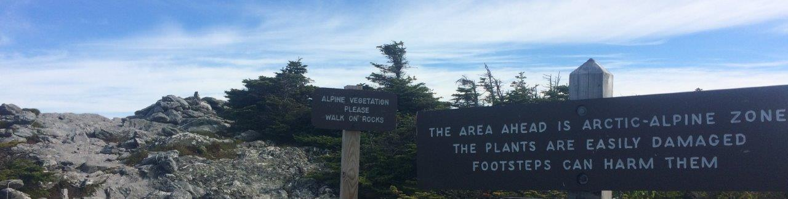
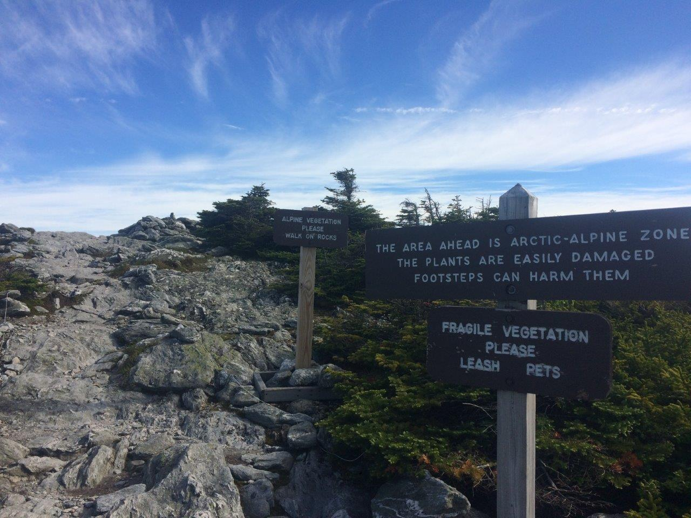

June 16, 2018: Killington to David Logan Shelter (13 miles)
Nobody
told me this. But little by litte
the smell of mud and leaves returned to me…— (Oliver, lines 15-17)
Started off the day with an annoying realization: I forgot to buy fuel in town yesterday! I have a decent amount, but 5 days would probably be stretching it. So I set out to the gear shop in Killington for a small canister after breakfast. Lightened Up and I parted ways, which was sad. I wished him well on the rest of his AT journey.
After getting fuel, I packed up my room and went to check out. I was mortified after weighing my pack—34 lbs! Way more than I had hoped. But it is the first day after a resupply, so probably the worst it will be.
Today’s objective was a 13 mile hike to David Logan Shelter. It was pretty mellow and quiet hiking all day long. Mostly flat, and not many people around, save a young couple from Maryland. I had lunch with them halfway.
The hike to the shelter was a quiet and lonesome walk along a gentle ridge. There were two older guys and a woman there when I arrived. They had a fire going, even though it was only 5:30PM. The black flies were bad today, especially at this shelter. So the fire served a useful purpose. They were all friendly, local Vermonters. We chatted for a bit as I made dinner. The Maryland duo came by at around 6:30PM and took the lower bunk.
I like this shelter. And I enjoy the company.
June 17, 2018: David Logan Shelter to Sucker Brook Shelter (12 miles)
How does any of us live in this world?
One thing compensates for another, I suppose.— (Oliver, lines 16-17)
Today’s hike was to Sucker Brook Shelter, about 12 miles from David Logan.
The older folks were up and out by 5:30AM. I got up at 6 and left by 7. The couple was just waking up when I started on the trail.
The hiking was a bit more rigorous today. Flat for a while and then rolling hills and small peaks. The weather was nice and I listened to music for a while.
I had lunch with the duo at one shelter about 7 miles in. They didn’t bring a stove, so they just have a giant bag of snacks (three-quarters of which was candy).
Before making it to the shelter, I saw a young boy (with a camping backpack) and an older man (also with a backpack). I figured they were a grandfather and grandson on a Father’s Day outing. We spoke for a little while (they indeed were a grandfather/grandson hiking duo) before I hopped on ahead of them to arrive at the shelter.
The shelter was pretty nice and right next to a small stream. The grandfather and grandson arrived shortly after I set my pack down. The three of us shared the lean-to tonight.
Turns out the older guy (Tom or “Krumholz”) already hiked the LT, and is now section hiking it with his very energetic 8-year old grandson (Silus or “Rockhopper”). I’m enamored with these two. I hope to have the same relationship with my grandson one day.
We made dinner (lentil stew for me, mac and cheese and lasagna for Silus and Tom), and played a card game called Junk. Silus’s favorite.
By 9:00PM we were off to bed. I’m happy to share a shelter with this family. I’m happy people like them exist in these mountains.
June 18, 2018: Sucker Brook Shelter to Skylight Pond Shelter (10 miles)
He turns the corner,
he scrapes the dirt from his soles,
he runs up the dark staircase, humming.— (Oliver, lines 16-18)
Today was a shorter day (about 10 miles) that involved some decent climbs, great trail magic, and serious rainstorms.
The hike down to Middlebury Gap was quiet but pretty. I passed some nice open glens and a lake that I decided not to explore. I got to the road soon after Silus and Tom. They had a new companion—a man named Bill. He was quite chatty and gave me watermelon and trail mix. There was also a Macy’s shopping bag hanging from the trailhead sign with 10+ individually plastic wrapped brownies and some weird trail mix. I ate a brownie, it was fantastic.
My God, I love trail magic.
The best (and most unfortunate) part of the morning was that apparently Bike & Build (NUS ’18) just came over the pass! There was a chalk message on the side of the road near the Macy’s bag that said:
Bike & Build <3 AT
I have a feeling they dropped off the trail magic. I’m SO bummed that I missed them. They must have gone by no more than an hour ago.
Bike & Build trail magic.
The rest of the day involved lots of climbing and log hopping. The trail was littered with freshly fallen trees. The blowdowns made quite the obstacle course between Boyce Shelter and Skylight.
The lodge was even better than I remember it from two years ago. A large cabin with a loft and porch overlooking the pond. It was empty and quiet. I settled in and snacked a bit.
Soon enough, the rain came. A deluge that persisted for at least 20 min. I started to worry about Tom and Silus (and Bill). To have to maneuver all those blowdowns in the pouring rain!
Skylight made for a welcome temporary home during the deluge.
I dozed off for a bit to the sound of the rain hitting the metal roof and dreamed of summer storms at Archbold.
Soon enough I was woken up by the couple from Maryland, and their new red-haired friend named Ethan. Tom, Silus, and Bill quickly followed. Everyone (except me) was completely soaked! I felt a little guilty being so dry and wearing my pajamas already.
After the rain died down a bit, Tom, Silus, and Bill quickly departed—much to Silus’s dismay. They were moving on to the next shelter.
The day dwindled on and we eventually made our dinner, beds, and crashed.
June 19, 2018: Sunrise to Battell Shelter (14 miles)
I rise
by lamplight and hurry out— (Oliver, lines 1-2)
The day started gloomy and cold and wet, Ethan and I rolled out around 7:30AM and stuck together most of the day. The blowdowns to Emily Proctor Shelter were intense and definitely added time.
We ran into Silus & Co. after taking a pause at Emily Proctor. They accidentally backtracked a mile or so.
We kept moving toward Lincoln Gap, the weather improving with each hour. Ethan told me all about his childhood and family. This guy had really been through it. Serious motorcycle accident at 16 that broke both femurs. Dad passed from cancer. Mom has it now. Yet somehow, he still maintains a positive attitude and adventurous spirit.
We hike over some minor peaks and eventually make it to some cliff views of the Adirondacks from Mt. Grant. An older couple (40s maybe) immediately offers us some Switchbacks and we chat for a long while. They are both teachers and spending the summer exploring Vermont.
Surprise switchbacks on the Long Trail.
Trail folk are amazing. The things people will do for thru-hikers…
We eventually leave, thanking them for the beers and wishing them well. The road is about one mile ahead. On the way we encounter a woman whom Ethan instantly identifies as Silus’s mother.
“Have you guys seen a little guy…?” she begins to ask.
“Yes!” Ethan blurts back emphatically, before she finished her question. “Probably about an hour back on the trail.”
“Really?! Oh man. Okay, thanks!” she responds, and keeps on moving to find them. Only a few minutes later we encounter a South African man who asks the same question, so we give the same answer and he moves on his way.
We finally get to the road and begin our climb toward Battell Shelter. It gets pretty steep (and wet), but I arrive within an hour, quickly followed by Ethan.
The steep, rocky ascent to Battell Shelter.
The Maryland duo aren’t far behind. Eventually, around 7:30PM, the family arrives, starting with Silus and his mom, the South African fellow named Rob, and finally Tom. They all joke and laugh about the rough, long day they had.
In the end, Ethan and I shared the shelter with Silus, his mom, and his grandfather. Everyone else tented.
It was a full day, 14 miles long with many interesting people met along the way.
Tomorrow we go over the first 4000 ft peaks—Abe & Ellen!
June 20, 2018: Battell Shelter to Stark’s Nest (7.4 miles)
What I mean is, I wanted to live my life
but I didn’t want to do what I had to
to go on, which was: to go back.— (Oliver, lines 11-13)
The hike to Abraham was rather quick this morning. The views were just as good as they were two years ago, when I hiked this section with Theresa. Full 360 degrees clear skies, with excellent views of Champlain and the Adirondacks to the west, Camel’s Hump and Mansfield to the north, the White Mountains to the east, and Killington to the South.

Views from Mt. Abe.
The rest of the day flew by. I hiked with Ethan for most of it, ridge running from Abraham to Lincoln to Ellen. We spent a while relaxing up on a ski lift from Sugarbush just past the Ellen summit. We soon saw Silus & Co., trickling in a few minutes after we arrived. It was the kind of pause that makes hiking all worth it. Views of the mountains, good company, and a well rewarded rest. All on top of the warm nostalgia from my trip with Theresa that inspired this thru-hike in the first place.
The Maryland duo, Caroline & Derek (trailnames TBD).
Pretty soon after that—maybe 20 minutes—we got to Stark’s Nest, the ski warming hut where I’m staying tonight. It was a short day of hiking. I’ve been hoping to return to this spot ever since 2016.
Ethan and Silus & Co. all hung around for a bit, maybe half an hour, on the balcony of the Nest. It may have been the last time I’d see any of them. I said my goodbyes to the party of hikers. Rob mentioned he has a cabin near Butler Lodge on Mansfield and would be happy to hike up some beers before I arrive in a few days. That would be a real treat for Theresa and me.
I’m gonna miss them all, especially Ethan, whom I feel like I’ve been hiking with for weeks. I wish we could stick together to Journey’s End. I forgot to get his full name or number before he left, which I wish I had. It would be nice to reach out, if I’m ever passing through western Mass.
The day dwindled down. I took advantage of the reception and privacy to call some friends and my parents.
Never seen single chair ski lifts before Mad River Glen. The Mad River Glen warming hut is truly a gem on the LT.
I read about the Mad River Glen history from a book in the hut. There were a lot of historical books on the skiing club in the warming hut. Crazy history. Incredible that they still don’t allow snowboarding. I can’t believe I haven’t heard of this place before.
Okay, turning off now. Short day tomorrow hiking before resting (and cleaning!) up at the inn.
June 21, 2018: Stark’s Nest to Hyde Away Inn (4.5 miles)
I’m only stopping here for a little while.
— (Oliver, line 26)
Hiking out was pretty quick to App Gap. I stopped at the Theron Dean Shelter to have a look. Woke up an older couple from Texas by accident. The view from the “dinner/breakfast” spot was amazing! Someone fashioned two chairs from stones and set them in front of a ledge that looked perfectly at Camel’s Hump. This is a really special place.
I decided to walk all the way to the Hyde Away Inn, two miles east along the road. It was still only 8:30AM when I got to the road, so it might have been too early to check in if I hitched.
I passed a few establishments along the road. The Mad River Glen ski resort. The Mad River Barn inn. I almost went in and asked for a room, but it’s too expensive for me. Eventually, I got to the inn at 10AM.
The staff seemed a little cold at first. They almost seemed annoyed to have a guest to deal with.
In any case, they checked me into a room above the bar really quickly. It’s a bummer I couldn’t find other people to share this room with. It has a single bed and a set of bunks. It’s only $90, which isn’t the worst, but could have been way cheaper with three.
Town was pretty awesome. I stopped to get pizza and beer for lunch. I couldn’t tell if it was actually good pizza, or simply magnified after five days of eating peanut butter wraps and lentil stew. In any case, I was very content. I walked down to an ice cream shop in the heart of town right next to the river and bought a cone of chocolate and maple soft serve. I was basically in heaven today, spoiling myself with everything. That’s my favorite thing about thru-hiking—you really earn these indulgences and they feel even more amazing given the minimal luxuries on the trail.
I spent about an hour in the local book store. I was in love with this shop. Literal piles of books everywhere. And not just crap paperback mysteries. Pretty decent collection. The owner was extremely chatty, but interesting in a sort of Jeff Goldblum way. We talked for a long time about Murakami and Miyazaki. So yes, my kind of guy. I was dumb and bought three books, which I don’t really want to take on the trail. Maybe I’ll just leave them at shelters so they can have decent literature for a change—Borges, Twain, and some Russian dude whose name eludes me now.
I relaxed until dinner. Wrote James a long email updating him on my travels. Took a short nap.
Dinner was pretty great. Caprese panini with very good fries, beer, and a mousse/ice cream dessert. I spoke (if you can say that, more like was spoken to) with an old man who gave me a long, sad autobiography. I felt bad for him; he was clearly unhappy with how parts of his life turned out. I tried to listen and respond as best I could. But I honestly just wanted either normal, upbeat conversation or solitude. Regardless, dinner and beer were satisfying.
June 22, 2018: Hyde Away Inn to Montclair Glen Lodge (10 miles)
…in the sleek, amazing
humdrum of nature’s design…— (Oliver, lines 33-34)
And we’re back on the trail to Camel’s Hump!
I had a quick tasty egg breakfast and coffee at the inn and was driven right after to the trailhead at App Gap.
Tough hiking today. Burnt Rock was especially challenging. But great weather and pretty views. I was full of nostalgia, having walked this same path just one year ago with Hannah.
Approaching the hump.
I stopped at the Montclair Glen Lodge, about 10 miles in. It was already 4:45pm and I didn’t want to continue on another 6 miles to the next shelter over the hump.
Sam was here. He was at the Inn at the Long Trail, but left the trail for a few days to deal with a toe infection. You really have to be careful about everything as a thru-hiker. One small slip-up can domino and cascade into physical and/or psychological chaos. All Sam did was clip his nails a bit too short, cutting a small area of skin, and all hell broke loose. It seems to be improving though.
Made some dinner (yet another cheesy lentil stew; still not tired of these meals) and now getting ready for bed. It’s supposed to rain in the early afternoon tomorrow, so I want to get over the hump and to the next shelter early.
Theresa comes in two days! And with bagels, lox, and iced coffee! Hooray!
June 23, 2018: Montclair Glen Lodge to Bamford Ridge Shelter (6 miles)
…legs pumping
up and down the hills.— (Oliver, lines 10-11)
Today was short, but lingered nicely. I hiked up and over Camel’s Hump, arriving at the next shelter (Bamford Ridge) six miles away at 11AM.
Atop the windy hump.
Toward the end of my descent it began to rain. Not too hard, but enough to make the rocks slippery and the going more treacherous. Luckily I made it with only a few slips and no major injuries.
The ever exciting rocky cliffside trail to Camel’s Hump.
Just a short spur trail before the summit of Camel’s Hump to see the wreckage of this WWII bomber plane.
Déjà vu, huh? It seems I can’t escape the rain on the hump. At least this time I got to the shelter early (an understatement).
I’m hanging here for the remainder of the day. No need to continue, since Theresa is meeting me at the road in the morning. Derek and Caroline are also here, as well as a caretaker crew undergoing training.
I think it will rain all day long. So I’ll sleep. And read.
Continue reading part 3 here.
Compiled in R with RMarkdown and Github Pages.
Copyright © Harrison Goldspiel.